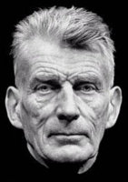

(1906 – 1989)

Anlamsızlığın hüküm sürdüğüne inandığı bir dünyayı anlamlı kılmak, mutsuzluğun kuşattığı insanlığı mutlu edebilmek ve her şeyden çok da kendi var oluşuna katlanabilmek için sürekli yazdı Samuel Beckett. "Hiçbir şey anlatmayan" romanlar, "hiçbir şey göstermeyen" tiyatro oyunları yazdı, ama sonunda insanlığa "bir şey" vermeyi başarmış olmalı ki Nobel Edebiyat Ödülü'nü kazandı.
Samuel Barclay Beckett (okunuşu: Samyıl Barkley Bekıt) bina inşaatlarında keşif uzmanı bir baba ve çok dindar bir hemşire annenin oğlu olarak 1906 yılında İrlanda'nın Dublin kentinde dünyaya geldi. Evleri dönem koşullarına göre lüks sayılabilecek derecede güzel bir evdi. Samuel beş yaşındayken anaokuluna gitmeye başladı ve ilk müzik eğitimini burada aldı. Daha sonra şehir merkezinde Harcourt Caddesi'ndeki Earlsford House School'a devam etti. 1919'da Fermanagh, Enniskillen'de bulunan, Oscar Wilde'ın da okuduğu Portora Royal School'a geçti.
Beckett 1923 ile 1927 arasında Dublin'deki Trinity College'da Fransızca, İngilizce ve İtalyanca üzerine eğitim gördü. Beckett, lisans eğitimini burada tamamladıktan sonra kısa bir süre Belfast'teki Campbell College'da öğretmenlik yaptı. Ardından, Paris'teki École Normale Supérieure'de "İngilizce okutman" olarak çalışmaya başladı. Burada, yakın arkadaşı şair Thomas MacGreevy tarafından ünlü İrlandalı yazar James Joyce ile tanıştırıldı. Bu karşılaşmanın genç Beckett üzerinde derin bir etkisi oldu. Beckett, Joyce'a Finnegans Wake adıyla yayınlanacak olan kitabı için yaptığı araştırmalar başta olmak üzere pek çok çalışmasında yardımcı oldu.
Beckett 1929'da, basılan ilk eseri olan Dante... Bruno. Vico.. Joyce isimli eleştiri denemesini yayınladı. Bu makale Joyce'un eserlerini ve tarzını, ahlaksız, karanlık ve donuk olduğu iddialarına karşı savunmaktaydı. Beckett, 1930'da Trinity College'a okutman olarak döndü; ancak dördüncü dönemin sonunda, Aralık 1931'de buradan ayrıldı. Kendi seçtiği bu meslek, neredeyse patolojik derecede utangaç olması ve ders verirken insanların önünde olmaktan hoşlanmaması sebebiyle onda kısa sürede hayal kırıklığı yaratmıştı. Ayrıca derslerdeki zorlayıcı tutumu ve kıt notları sebebiyle öğrenciler tarafından şikayet edilmesi ve okul yöneticileri tarafından uyarılması da bu hayal kırıklığını artırmıştı. Hayatındaki bu dönüm noktasının anısına, Johann Wolfgang von Goethe'nin Wilhelm Meister'in Çıraklık Yılları romanından esinlenerek Gnome şiirini yazdı. Şiir 1934'te Dublin Magazine'de yayınlandı.
Trinity College'dan ayrıldıktan sonra Beckett, Avrupa'da yolculuklara başladı. Bir süre Londra'da kaldı ve 1931'de, Fransız yazar Marcel Proust hakkında yazdığı Proust adlı eleştirel çalışmasını yayınladı. İki yıl sonra, babasının ölümünün etkisiyle, Tavistock Kliniği'nde Dr. Wilfred Bion gözetiminde iki yıl sürecek olan bir tedaviye başladı. Bion, Beckett'in Carl Jung'un Tavistock'ta verdiği üçüncü derse girmesini sağladı. Beckett'ın yıllar sonra bile hatırladığı bu ders "never properly born" (asla uygun biçimde doğmamış olmak) hakkındaydı. Buradaki görüşlerin etkileri, Beckett'ın Watt ve Godot'yu Beklerken gibi eserlerinde görülür. Beckett 1932'de ilk romanı Dream of Fair to Middling Women'ı yazdı; ancak pek çok yayıncının olumsuz cevabı üzerine kitabı yayımlatmaktan vazgeçti. Bu roman 1993'e kadar yayımlanamamış olmasına rağmen Beckett'ın birçok şiirine ve yayımlanan ilk kitabı olan, 1933 tarihli Aşksız İlişkiler isimli öykü derlemesine kaynaklık etti.
Beckett bu dönemde bazı makaleler ve incelemeler yayınladı. Bunların arasında Günümüz İrlanda Şiiri (The Bookman, Ağustos 1934) ve arkadaşı Thomas MacGreevy'nin şiirlerini incelediği Hümanistik Dingincilik (The Dublin Magazine, Temmuz - Eylül 1934) gibi yazılar da vardı.
Samuel Beckett Echo's Bones and Other Precipitates isimli şiir kitabını yayınladığı 1935'te, aynı zamanda Murphy isimli romanı üzerinde çalışıyordu. Beckett bu arada Murphy'yi bitirdi ve 1936'da tüm Almanya'yı dolaşacağı uzun bir yolculuğa çıktı. Bu yolculuk boyunca, gördüğü önemli sanat eserlerini kaydettiği pek çok defter tuttu. Ayrıca tüm ülkeyi sarmaya başlamış olan Nazi hareketine karşı duyduğu hoşnutsuzlukla ilgili notlar aldı. 1937'de kısa bir süre için İrlanda'ya döndü ve Murphy'nin yayımlanmasıyla ilgilendi. Romanı ertesi yıl kendisi Fransızcaya çevirdi. Beckett'ın annesiyle yaşadığı bir anlaşmazlık, Paris'te yaşama fikrini daha da perçinledi. Aralık 1937 civarında, Peggy Guggenheim ile kısa süreli bir ilişki yaşadı.
Paris'te, Ocak 1938'de, bir kadın satıcısının ısrarlarını geri çevirmeye çalışırken göğsünden bıçaklanan Beckett, ölümden döndü. James Joyce, yaralı Beckett için hastanede özel bir oda hazırlattı. Paris'e daha önceki gelişinden Beckett'ı uzaktan tanıyan Suzanne Dechevaux-Dumesnil olayın kamuoyunda duyulmasıyla birlikte yazara ilgi gösterdi ve aralarında yaşam boyu sürecek bir birliktelik başladı.
Beckett, 1940'taki Alman işgali sonrasında Fransız Direnişi'ne katıldı. İki yıl boyunca kurye olarak çalıştı ve birçok defa Gestapo tarafından yakalanma tehlikesi atlattı. Ağustos 1942'de birliğinin ihbar edilmesi sebebiyle Suzanne ile birlikte güneye kaçtı ve Alpes-Côte d'Azur bölgesindeki Roussillon, Vaucluse kasabasında saklandı. Burada, evinin arka bahçesinde mühimmat saklayarak Direniş'e yardım etmeyi sürdürdü. Roussillon'da yaşadığı iki yıl boyunca Maquis gerillalarının Vaucluse Dağları'nda Alman Ordusu'na karşı gerçekleştirdiği sabotajlara destek verdi. Fransız Hükümeti Alman istilasına karşı gösterdiği çabaları sebebiyle Beckett'ı Savaş Haçı (Croix de Guerre) ve Direniş Madalyası (Médaille de la Résistance) ile ödüllendirdi. Ancak Beckett, hayatının sonuna kadar bu dönemdeki faaliyetlerini hep "izcilik işleri" olarak nitelendirdi. Roussillon'da saklandığı süre boyunca, "bağlantısını koparmamak için" Watt isimli romanı üzerinde çalıştı. (1941'de başladığı bu roman 1945'te bitti, ancak 1953'e kadar yayımlanmadı.)
Beckett, 1945 yılında kısa süreliğine Dublin'e döndü. Ertesi yıl da 1970'e kadar yayımlanmayacak olan dördüncü romanı Mercier ile Camier'i yazmaya başladı. Bu roman, pek çok yönden Beckett'in kısa süre sonra yazacağı en ünlü yapıtı olan tiyatro oyunu Godot'yu Beklerken'ın habercisiydi. Daha da önemlisi, Beckett'in doğrudan Fransızca yazdığı ilk uzun eseriydi. Beckett Molly, Malone Ölüyor ve Adlandırılamayan'dan oluşan roman üçlemesi de dahil olmak üzere daha sonraki çoğu eserini Fransızca yazdı. Anadili İngilizce olmasına rağmen eserlerini Fransızca yazmasının sebebi, kendi deyimiyle "üslupsuz" yazmanın Fransızcada daha kolay olmasıydı. Beckett Fransızcanın onun için taşıdığı "yabancılık kokusunu" seviyordu ve "anadilde yazmanın özünde var olan otomatizmlerden kurtulmak" için Fransızca yazıyordu.
Beckett şöhretinin büyük kısmını Godot'yu Beklerken isimli oyununa borçluydu ve artık çoğunlukla Fransızca yazıyordu. Çevirisini Patrick Bowles ile birlikte yaptığı Molloy dışındaki bütün çalışmalarını kendisi İngilizceye çevirmişti. Godot'yu Beklerken'in başarısı yazarına tiyatroda bir kariyer açtı. Beckett uzun oyunlar yazmaya devam etti. Bunlar arasında 1957'te Oyun Sonu, daha önce adı geçen Krapp'ın Son Bandı (İngilizce), 1960'ta Mutlu Günler (İngilizce) ve 1963'te Oyun yer alır.
1960'lar, hem yazarlığı açısından hem kişisel açıdan Beckett için değişim dönemiydi. 1961'de Beckett, Jorge Luis Borges ile paylaşacağı Uluslararası Yayıncıların Formentor Ödülü'nü kazandı. Aynı yıl İngiltere'de, gizli bir törenle ve daha çok Fransız miras hukukuna bağlı nedenlerden dolayı Suzanne ile evlendi. Beckett, 1969'da Suzanne'le Tunus'ta tatildeyken Nobel Edebiyat Ödülü'nü kazandığını öğrendi. Suzanne gözlerden uzak özel yaşamına aşırı derecede bağlı olan kocasının o andan itibaren şöhretin yükünü taşıyamayacağını görerek ödülü "felaket" olarak nitelendirdi. Beckett söyleşilere çok fazla vakit ayırmamakla birlikte, zaman zaman sanatçılarla, edebiyat araştırmacılarıyla ve Montparnasse'deki evinin yakınında bulunan Paris Hotel PLM'nin lobisinde kendisini arayan hayranlarıyla bizzat görüşüyordu.
Suzanne, 17 Temmuz 1989'da öldü. Anfizemi ve Parkinson'a yakalanan ve bir bakımevinde kalmakta olan Beckett da aynı yıl 22 Aralık'ta öldü. İkisi Paris'te Montparnasse Mezarlığı'nda birlikte gömülüdür ve Beckett'in "gri olsun da nasıl olursa olsun" direktifine uygun, mermerden bir mezar taşını paylaşmaktadır.
Seçme Romanları: Murphy (1938 – Ayrıntı Yayınları, 2012), Watt (1945), Molloy (1951), Malone Ölüyor (1951), Adlandırılamayan (1953), Acaba Nasıl? (1961 – Ayrıntı Yayınları, 2001)